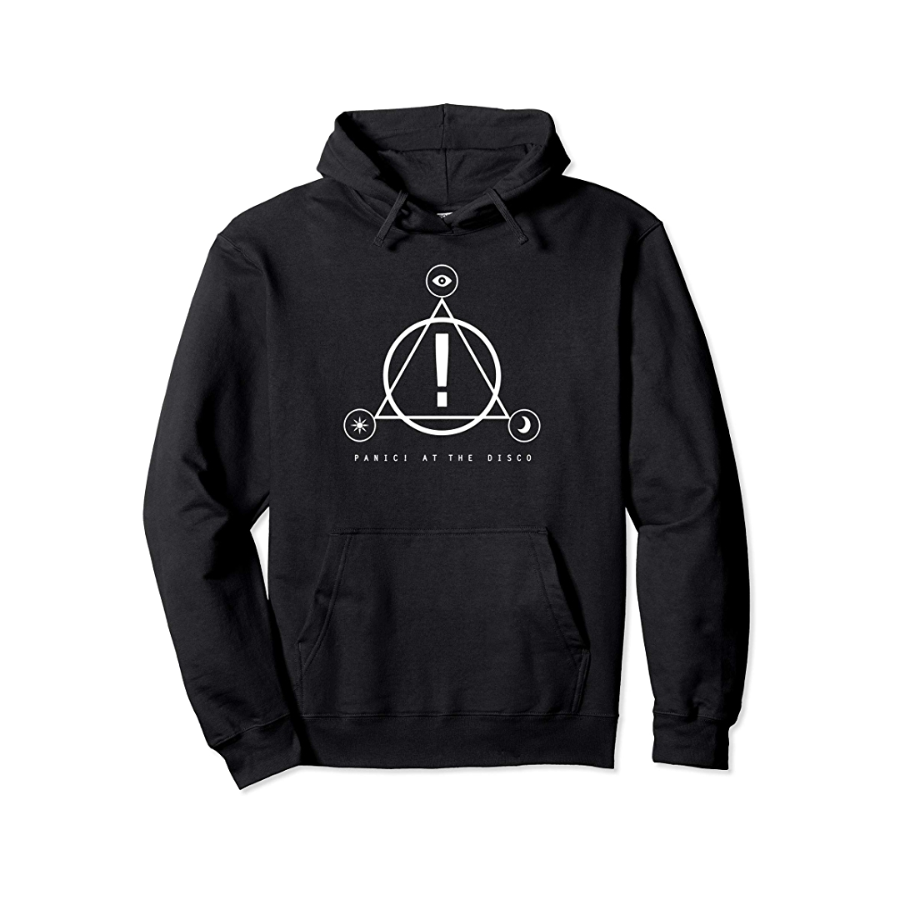
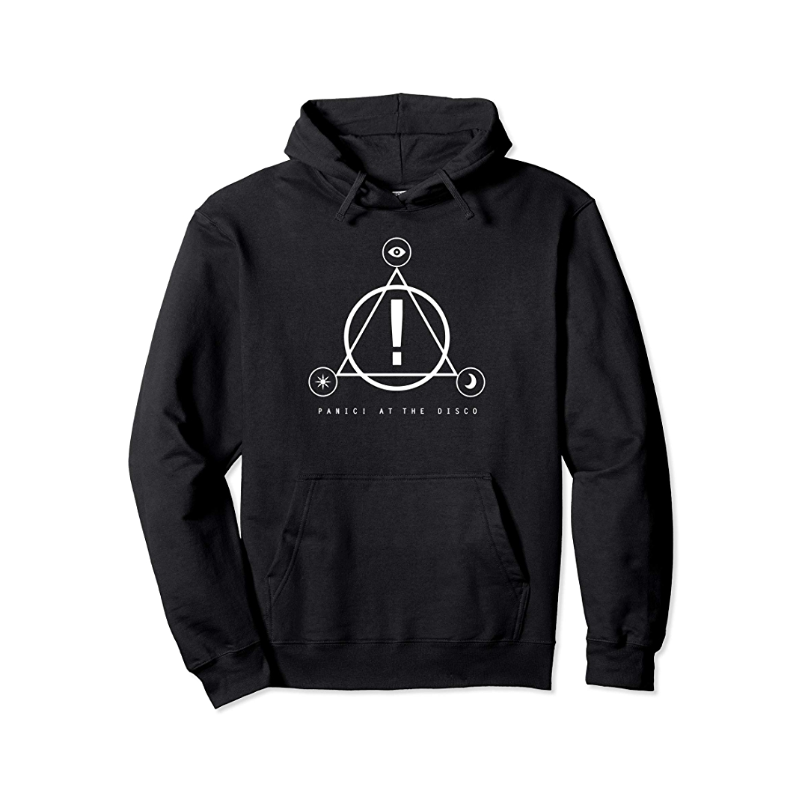

Informatie
Panic! at the Disco is the solo project of American musician Brendon Urie. It was originally a pop rock band from Las Vegas, Nevada, formed in 2004 by childhood friends Urie, Ryan Ross, Spencer Smith, and Brent Wilson. They recorded their first demos while they were in high school. Shortly after, the band recorded and released their debut studio album, A Fever You Can't Sweat Out (2005).
Merch
 

Tourdates
- FEB 20, 2023 Stadthalle Vienna, Austria w/ special guest FLETCHER
- FEB 21, 2023 Olympiahalle Munich, Germany w/ special guest FLETCHER
- FEB 23, 2023 Barclays Arena Hamburg, Germany w/ special guest FLETCHER
- FEB 24, 2023 Lanxess Arena Cologne, Germany w/ special guest FLETCHER
- FEB 25, 2023 Rotterdam Ahoy Rotterdam, Netherlands w/ special guest FLETCHER
- FEB 28, 2023 Sportpaleis Antwerp, Belgium w/ special guest FLETCHER
- MAR 1, 2023 AccorHotels Arena Paris, France w/ special guest FLETCHER
- MAR 3, 2023 OVO Hydro Glasgow, Scotland w/ special guest FLETCHER
- MAR 4, 2023 Utilita Arena Birmingham, UK w/ special guest FLETCHER
- MAR 6, 2023 The O2 London, UK w/ special guest FLETCHER
- MAR 7, 2023 The O2 London, UK w/ special guest FLETCHER
- MAR 10, 2023 AO Arena Manchester, UK w/ special guest FLETCHER